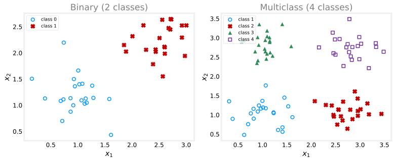
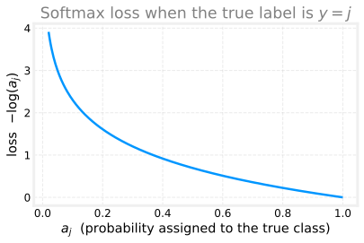
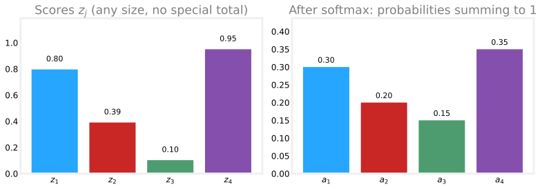
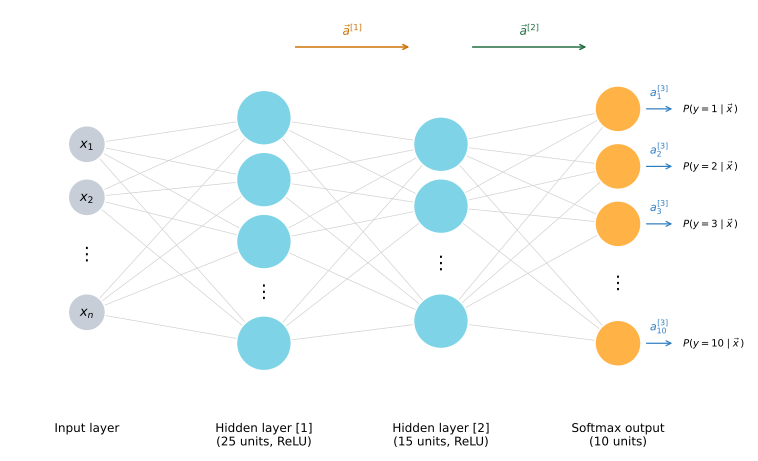
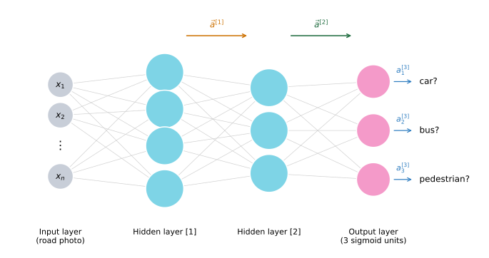

Multiclass Classification
machine-learning
neural-networks
Classification problems where the label can take more than two values, such as recognizing all ten digits, diagnosing several diseases, or spotting different defect types.
Multiclass classification refers to classification problems where the output label can take on more than just two possible values, so not only 0 or 1. Everything so far in the handwritten digit examples has been about telling apart just the digits 0 and 1. But reading a real postal code or zip code off an envelope means recognizing all 10 possible digits, not two.
Where Multiclass Problems Show Up
The same situation appears all over the place.
- Handwritten digits. Reading zip codes means classifying each digit as one of 0 through 9, ten possible labels.
- Medical diagnosis. Trying to decide whether a patient has one of three or five different possible diseases is a multiclass problem, as you saw back in the first course.
- Visual defect inspection. Looking at the picture of a pill a pharmaceutical company has manufactured, you might try to figure out whether it has a scratch defect, a discoloration defect, or a chip defect. Those are multiple classes of defect that the same part could be labeled with.
A multiclass classification problem is still a classification problem. The label \(y\) can take on only a small number of discrete categories, not any number at all. What is new is simply that \(y\) can now take on more than two possible values.
Binary Versus Multiclass
Think back to binary classification. With features \(x_1\) and \(x_2\), you might have a data set with two groups, and logistic regression fits a model to estimate the probability of \(y\) being 1 given the features, because \(y\) was only ever 0 or 1.
With a multiclass problem the data set has more than two groups. Below on the left is a binary data set with two classes. On the right is a multiclass data set with four classes, where each marker shape is a different class.
For the binary case on the left, the model only had to estimate the chance of \(y = 1\). For the four-class case on the right, the model instead estimates a probability for every class, so it estimates the chance that \(y = 1\), the chance that \(y = 2\), the chance that \(y = 3\), and the chance that \(y = 4\). A good algorithm can then learn a decision boundary that divides the feature space into four regions rather than just two. The picture below shows what that looks like on the same four-class data. Each shaded region is where the model would predict that class, and the borders between the shaded regions are the decision boundary.

That is the definition of a multiclass classification problem. The algorithm that actually solves it, and that learned the four regions above, is softmax regression, covered in the sections below.
Review Questions
1. What makes a problem a multiclass classification problem rather than a binary one?
TipAnswer
The label \(y\) still takes on only a small number of discrete categories, so it is still classification, but now \(y\) can take on more than two possible values instead of just 0 or 1.
1. Give two real examples of multiclass classification and say how many classes each has.
TipAnswer
Any two of these work. Reading handwritten digits in a zip code (10 classes, 0 through 9), diagnosing which of several diseases a patient has (for example 3 or 5 classes), or inspecting a manufactured pill for scratch, discoloration, or chip defects (several defect classes).
1. In a four-class problem, what does the model estimate, and how does this differ from binary logistic regression?
TipAnswer
It estimates a probability for each class, the chance that \(y = 1\), that \(y = 2\), that \(y = 3\), and that \(y = 4\). Binary logistic regression only estimates a single probability, the chance that \(y = 1\).
Softmax Regression
The softmax regression algorithm is a generalization of logistic regression, a binary classification algorithm, to the multiclass setting.
Logistic Regression, Rewritten
Recall that logistic regression applies when \(y\) takes on two possible values, either 0 or 1. It first computes
\[ z = \vec{w} \cdot \vec{x} + b, \qquad a = g(z) = \frac{1}{1 + e^{-z}} = P(y = 1 \mid \vec{x}), \]
and interprets \(a\) as the estimated probability that \(y = 1\) given the input features \(\vec{x}\). Here is a quick check. If the probability that \(y = 1\) is 0.71, what is the probability that \(y = 0\)? The two chances have to add up to 1, so the answer is \(1 - 0.71 = 0.29\).
To set up the generalization, it helps to think of logistic regression as computing two numbers rather than one.
\[ a_1 = P(y = 1 \mid \vec{x}), \qquad a_2 = 1 - a_1 = P(y = 0 \mid \vec{x}). \]
By construction \(a_1\) and \(a_2\) add up to 1. Softmax regression simply extends this idea from two numbers to as many as there are classes.
Softmax for Four Classes
Take a concrete example where \(y\) can take on four values, so \(y \in \{1, 2, 3, 4\}\). Softmax regression first computes one score per class,
\[ \underset{\color{#0096ff}{\bigcirc}}{z_1} = \vec{w}_1 \cdot \vec{x} + b_1, \quad \underset{\color{#C00000}{\times}}{z_2} = \vec{w}_2 \cdot \vec{x} + b_2, \quad \underset{\color{#2E8B57}{\blacktriangle}}{z_3} = \vec{w}_3 \cdot \vec{x} + b_3, \quad \underset{\color{#7030A0}{\square}}{z_4} = \vec{w}_4 \cdot \vec{x} + b_4, \]
where \(\vec{w}_1, \dots, \vec{w}_4\) and \(b_1, \dots, b_4\) are the parameters of the model, and the small shape under each score marks its class, matching the markers in the scatter plot above. It then turns these scores into probabilities,
\[ a_1 = \frac{\underset{\color{#0096ff}{\bigcirc}}{e^{z_1}}}{e^{z_1} + e^{z_2} + e^{z_3} + e^{z_4}} = P(y = 1 \mid \vec{x}), \]
and similarly
\[ a_2 = \frac{\underset{\color{#C00000}{\times}}{e^{z_2}}}{e^{z_1} + e^{z_2} + e^{z_3} + e^{z_4}}, \qquad a_3 = \frac{\underset{\color{#2E8B57}{\blacktriangle}}{e^{z_3}}}{e^{z_1} + e^{z_2} + e^{z_3} + e^{z_4}}, \qquad a_4 = \frac{\underset{\color{#7030A0}{\square}}{e^{z_4}}}{e^{z_1} + e^{z_2} + e^{z_3} + e^{z_4}}, \]
each one the estimated chance of the matching class. Every \(a_j\) uses the same denominator, the sum of \(e^{z}\) over all four classes, which is exactly what forces the four probabilities to add up to 1. Another quick check. If softmax gives \(a_1 = 0.30\), \(a_2 = 0.20\), and \(a_3 = 0.15\), then \(a_4\) must be \(1 - 0.30 - 0.20 - 0.15 = 0.35\), because the four chances have to sum to 1.
The picture below makes this concrete. On the left are four raw scores \(z_1, \dots, z_4\) for one input \(\vec{x}\). Scores can be any size, positive or negative, and they do not add up to anything special. On the right is what softmax does with them. Every score is pushed through \(e^{z}\) and divided by the common denominator, and out come the four probabilities from the quiz, which sum to exactly 1.

General Softmax Formula
In the general case \(y\) can take on \(N\) possible values, \(y \in \{1, 2, \dots, N\}\). Softmax regression computes
\[ z_j = \vec{w}_j \cdot \vec{x} + b_j, \qquad a_j = \frac{e^{z_j}}{\displaystyle\sum_{k=1}^{N} e^{z_k}} = P(y = j \mid \vec{x}). \]
The index \(k\) is used inside the sum because \(j\) refers to one specific fixed class, while \(k\) runs over all classes in the denominator. By construction, adding \(a_1, a_2, \dots, a_N\) always gives exactly 1.
It turns out that applying softmax regression with \(N = 2\) ends up computing essentially the same thing as logistic regression. The parameters come out slightly different, but the model reduces to logistic regression, which is why softmax regression is called its generalization.
Review Questions
1. Write the general softmax formula for \(a_j\) and explain why the outputs always add up to 1.
TipAnswer
\(a_j = \dfrac{e^{z_j}}{\sum_{k=1}^{N} e^{z_k}}\), where \(z_j = \vec{w}_j \cdot \vec{x} + b_j\). Every \(a_j\) shares the same denominator, the sum of \(e^{z_k}\) over all classes, so adding all the numerators reproduces the denominator and the total is exactly 1.
1. Softmax gives \(a_1 = 0.30\), \(a_2 = 0.20\), \(a_3 = 0.15\) in a four-class problem. What is \(a_4\)?
TipAnswer
\(a_4 = 1 - 0.30 - 0.20 - 0.15 = 0.35\). The four probabilities must sum to 1.
1. What does softmax regression reduce to when there are only \(N = 2\) classes?
TipAnswer
Logistic regression. The parameters end up slightly different, but the model computes essentially the same thing, which is why softmax is the generalization of logistic regression.
Cost Function for Softmax
To train the model, softmax regression needs a cost function. It helps to start from the logistic regression loss and see how it generalizes.
For logistic regression the loss was
\[ L = -y \log(a_1) - (1 - y) \log(1 - a_1). \]
Since \(a_2 = 1 - a_1\), this can be rewritten as
\[ L = -y \log(a_1) - (1 - y) \log(a_2). \]
Read that piece by piece. If \(y = 1\), only the first term survives and the loss is \(-\log(a_1)\). If \(y = 0\), only the second term survives and the loss is \(-\log(a_2)\). The cost over all parameters is then the average loss across the whole training set.
Softmax generalizes this directly. The loss conventionally used is called the cross-entropy loss. Given the outputs \(a_1, \dots, a_N\) and the true label \(y\), it is defined case by case,
\[ \text{loss}(a_1, \dots, a_N, y) = \begin{cases} -\log(a_1) & \text{if } y = 1, \\ -\log(a_2) & \text{if } y = 2, \\ \;\;\vdots & \\ -\log(a_N) & \text{if } y = N. \end{cases} \]
In other words, if the true label is \(y = j\), the loss is \(-\log(a_j)\), the negative log of the probability the model assigned to the correct class. For example, if \(y = 2\), the loss is \(-\log(a_2)\), and so on up to \(-\log(a_N)\) if \(y = N\). The shape of \(-\log(a_j)\) explains why this works.
When \(a_j\) is very close to 1, the loss is very small. As \(a_j\) shrinks, the loss grows, and it grows quickly as \(a_j\) approaches 0. This gives the algorithm an incentive to make \(a_j\), the probability of the actual class, as large as possible, as close to 1 as it can. Whatever the true value of \(y\) turns out to be, you want the model to have assigned a high probability to that value.
Notice that each training example has only one true label. So only one term, \(-\log(a_j)\) for the actual class \(j\), is ever computed for a given example. If \(y = 2\), you compute \(-\log(a_2)\) and none of the other terms. That is the full specification of softmax regression, both the model and its cost function.
The next step is to take this softmax regression model and fit it into a neural network, so that a network can be trained to carry out multiclass classification directly.
Review Questions
1. For a training example whose true label is \(y = 3\) in a softmax model, what is the loss?
TipAnswer
\(-\log(a_3)\), the negative log of the probability the model assigned to class 3. Only this single term is computed, because the example has just one true label.
1. Why does the loss \(-\log(a_j)\) push the model to make \(a_j\) close to 1?
TipAnswer
The curve \(-\log(a_j)\) is small when \(a_j\) is near 1 and grows large as \(a_j\) approaches 0. Minimizing it therefore drives \(a_j\), the predicted probability of the true class, upward toward 1.
Neural Network with a Softmax Output
To build a neural network that carries out multiclass classification, take the softmax regression model from above and drop it into the output layer of a neural network.
Back when the handwritten-digit example only had to tell apart two classes, a network with a couple of hidden layers and a single output unit did the job. To recognize all 10 digits, 0 through 9, change that final layer to have 10 output units instead of one, and make it a softmax layer. Because of this the network is said to have a softmax output, and that last layer is called a softmax layer.

Forward Propagation
Forward propagation runs exactly as before up to the last layer. Given an input \(\vec{x}\), the first hidden layer’s activations \(\vec{a}^{[1]}\) are computed the usual way, then the second hidden layer’s \(\vec{a}^{[2]}\) the same way again. The only thing that changes is the output layer \(\vec{a}^{[3]}\).
With 10 output classes, first compute 10 scores,
\[ z^{[3]}_j = \vec{w}^{[3]}_j \cdot \vec{a}^{[2]} + b^{[3]}_j, \qquad j = 1, \dots, 10, \]
which is the same linear step as any other layer, just repeated once per class. Then turn the scores into probabilities with softmax,
\[ a^{[3]}_1 = \frac{e^{z^{[3]}_1}}{e^{z^{[3]}_1} + \cdots + e^{z^{[3]}_{10}}} = P(y = 1 \mid \vec{x}), \]
and likewise \(a^{[3]}_2, \dots, a^{[3]}_{10}\) for the other classes. The superscript \([3]\) just marks that these quantities belong to layer 3. It clutters the notation a little, but it makes explicit that \(z^{[3]}_1\) is the score of the first unit of the third layer, computed from that unit’s own parameters \(\vec{w}^{[3]}_1\) and \(b^{[3]}_1\). The result is 10 numbers estimating the chance of \(y\) being each of the 10 possible labels.
Softmax Is an Unusual Activation
The softmax layer is sometimes called the softmax activation function, and it behaves differently from every activation seen on Activation Functions. Sigmoid, ReLU, and linear activations are element-wise: each output depends on only its own score, so \(a_1 = g(z_1)\), \(a_2 = g(z_2)\), and so on, applying \(g\) to each \(z\) independently.
Softmax is not element-wise. Here \(a^{[3]}_1\) is a function of \(z^{[3]}_1, z^{[3]}_2, \dots, z^{[3]}_{10}\) all at once. Every activation depends on all of the scores, because they share the same denominator. To compute any one of \(a_1\) through \(a_{10}\) you need all of \(z_1\) through \(z_{10}\) simultaneously. That coupling is unique to softmax.
Implementing It in TensorFlow
Specifying and training the model takes the same three steps as before. Sequentially string together three layers: 25 ReLU units, then 15 ReLU units, then an output layer of 10 units with a softmax activation, since the network now outputs \(a_1\) through \(a_{10}\).
import tensorflow as tf
from tensorflow.keras import Sequential
from tensorflow.keras.layers import Dense
from tensorflow.keras.losses import SparseCategoricalCrossentropy
model = Sequential([
Dense(units=25, activation='relu'),
Dense(units=15, activation='relu'),
Dense(units=10, activation='softmax'),
])
model.compile(loss=SparseCategoricalCrossentropy())
model.fit(X, Y, epochs=100)The cost function is the cross-entropy loss from Cost Function for Softmax above, which TensorFlow calls SparseCategoricalCrossentropy. Compare that with the BinaryCrossentropy used for logistic regression. The name is a mouthful, but it breaks down into two sensible pieces.
- Categorical: \(y\) is still sorted into categories, here the values 1 through 10.
- Sparse: each example belongs to exactly one of those categories. A digit is a 0, or a 1, …, or a 9, never two at once, so you will not see an image that is simultaneously a 2 and a 7.
WarningCorrect, but not the version to use
This code works, but do not use it as written. TensorFlow has a numerically more accurate way to implement a softmax output that computes these probabilities far more reliably. That recommended version is covered in Numerically Stable Softmax below; treat the code above as the straightforward-but-naive form that explains the idea.
Review Questions
1. Starting from the two-class digit network, what two changes make it classify all 10 digits?
TipAnswer
The output layer goes from a single unit to 10 output units, one per digit, and that layer uses a softmax activation, making it a softmax output layer. The hidden layers and the way forward propagation computes \(\vec{a}^{[1]}\) and \(\vec{a}^{[2]}\) are unchanged.
1. How does the softmax activation differ from sigmoid, ReLU, or linear?
TipAnswer
Those are element-wise: each activation depends only on its own score, for example \(a_1 = g(z_1)\). Softmax is not, because every \(a^{[3]}_j\) depends on all of \(z^{[3]}_1, \dots, z^{[3]}_{10}\) through their shared denominator, so all the outputs must be computed together.
1. In TensorFlow, what loss goes with a softmax output, and what do “sparse” and “categorical” mean?
TipAnswer
SparseCategoricalCrossentropy. Categorical means \(y\) takes one of several discrete categories, here 1 through 10. Sparse means each example belongs to exactly one of those categories, never several at once.
1. Why should you not use the straightforward TensorFlow code shown here?
TipAnswer
It is correct but numerically less accurate. TensorFlow has a recommended version that computes the softmax probabilities much more reliably, covered in Numerically Stable Softmax below.
Numerically Stable Softmax
The softmax network above works, but there is a better way to implement it. The issue is numerical round-off error, and TensorFlow can be told to sidestep it.
Numerical Round-off
Because a computer stores each number with only a finite amount of memory as a floating-point value, the way you choose to compute a quantity affects how much round-off error creeps in. Take the number \(\tfrac{2}{10000}\). Computing it directly is one thing. Computing it as \(\left(1 + \tfrac{1}{10000}\right) - \left(1 - \tfrac{1}{10000}\right)\), forming the two intermediate values first and then subtracting, is algebraically identical but leaves a little round-off error behind.
# The same value, 2/10000, computed two ways
direct = 2 / 10000
roundabout = (1 + 1/10000) - (1 - 1/10000)
print(f"direct: {direct:.20f}")
print(f"roundabout: {roundabout:.20f}")direct: 0.00020000000000000001
roundabout: 0.00019999999999997797The direct value is clean; the roundabout one is slightly off. The way we have been computing the softmax cost is correct, but like the roundabout expression it insists on forming an intermediate quantity, and a different formulation reduces the error.
Logistic Regression, More Accurately
The idea is easiest to see with logistic regression. Normally you compute the activation \(a = g(z) = \tfrac{1}{1 + e^{-z}}\) first, then plug it into the binary cross-entropy loss. That means the loss is written in terms of \(a\), and \(a\) has to be computed as an explicit intermediate value.
Instead, you can give TensorFlow the loss with \(a\) expanded back into \(\tfrac{1}{1 + e^{-z}}\), all in one expression. Now TensorFlow is free to rearrange terms and pick a more accurate way to evaluate it, rather than being forced to compute \(a\) on its own. In code, set the output layer to a linear activation so it emits \(z\), and move the sigmoid into the loss with from_logits=True.
from tensorflow.keras.losses import BinaryCrossentropy
model = Sequential([
Dense(units=25, activation='relu'),
Dense(units=15, activation='relu'),
Dense(units=1, activation='linear'), # outputs z, not g(z)
])
model.compile(loss=BinaryCrossentropy(from_logits=True))The from_logits=True argument tells TensorFlow that the number coming out of the network is the raw score \(z\), called the logit, and that it should fold the sigmoid into the loss itself. The cost is a little less readable, but a little more numerically accurate. For logistic regression either version is fine in practice.
The Same Idea for Softmax
Softmax is where the round-off actually matters, because the exponentials can blow up or vanish: if some \(z\) is very large, \(e^{z}\) becomes enormous, and if some \(z\) is very small, \(e^{z}\) becomes tiny. By moving the softmax into the loss, TensorFlow can rearrange terms to avoid those extreme intermediate numbers and compute the loss far more accurately.
As before, set the output layer to a linear activation so it emits \(z_1, \dots, z_{10}\) directly, and pass from_logits=True to the loss:
from tensorflow.keras.losses import SparseCategoricalCrossentropy
model = Sequential([
Dense(units=25, activation='relu'),
Dense(units=15, activation='relu'),
Dense(units=10, activation='linear'), # outputs the logits z_1..z_10
])
model.compile(loss=SparseCategoricalCrossentropy(from_logits=True))
model.fit(X, Y, epochs=100)Conceptually this does the same thing as the softmax version from the previous section; it is just more numerically accurate, at the cost of being a bit harder to read. If you come across code like this in the wild, that is all it is doing.
The Output Is Now Logits, Not Probabilities
There is one consequence to keep track of. With a linear output layer, the network’s final layer no longer outputs the probabilities \(a_1, \dots, a_{10}\). It outputs the raw scores \(z_1, \dots, z_{10}\). To recover probabilities you apply softmax to the outputs yourself.
logits = model(X)
probabilities = tf.nn.softmax(logits)The same caveat applies to the logistic version: because the sigmoid was folded into the loss, you have to map the output through the logistic function afterward to turn it into a probability.
With that, you can do multiclass classification with a softmax output layer and do it in a numerically stable way. A related but distinct setup, where a single example can carry several labels at once, is multi-label classification, taken up in Multi-Label Classification below.
Review Questions
1. Why can the naive softmax implementation lose numerical accuracy?
TipAnswer
It forms the probabilities \(a_j = e^{z_j} / \sum_k e^{z_k}\) as an explicit intermediate step, and with finite floating-point precision the very large or very small \(e^{z}\) values introduce round-off error, much like computing \(\tfrac{2}{10000}\) as \(\left(1 + \tfrac{1}{10000}\right) - \left(1 - \tfrac{1}{10000}\right)\) instead of directly.
1. What does from_logits=True do?
TipAnswer
It folds the output activation (softmax, or sigmoid for logistic regression) into the loss function. The output layer is set to a linear activation and passes the raw scores \(z\), the logits, straight to the loss, so TensorFlow can rearrange the combined expression and evaluate it more accurately instead of computing the probabilities as a separate intermediate step.
1. With from_logits=True, what does the final layer output, and how do you get probabilities?
TipAnswer
The linear output layer outputs the logits \(z_1, \dots, z_{10}\), not the probabilities \(a_1, \dots, a_{10}\). To turn them into probabilities you apply softmax to the outputs afterward, for example tf.nn.softmax(logits) (or sigmoid in the logistic-regression case).
Multi-Label Classification
Multiclass classification is not the same as multi-label classification, and the two are easy to confuse. In multiclass, the label \(y\) is a single value that happens to have many possible categories, like a handwritten digit that is exactly one of 0 through 9. In multi-label, a single input can carry several labels at once, each answered independently.
Several Labels for One Image
Picture the input to a self-driving car or driver-assistance system, a photo of the road ahead. You might want to answer several yes/no questions about that one image at the same time.
- Is there a car (at least one)?
- Is there a bus?
- Is there a pedestrian (at least one)?
Different photos give different combinations of answers, and every combination is possible.
| Road photo | Car? | Bus? | Pedestrian? | Target |
|---|---|---|---|---|
| Photo 1 | Yes | No | Yes | \(y = \begin{bmatrix} 1 \\ 0 \\ 1 \end{bmatrix}\) |
| Photo 2 | No | No | Yes | \(y = \begin{bmatrix} 0 \\ 0 \\ 1 \end{bmatrix}\) |
| Photo 3 | Yes | Yes | No | \(y = \begin{bmatrix} 1 \\ 1 \\ 0 \end{bmatrix}\) |
So the target \(y\) is not a single number, it is a vector of three numbers, one per question,
\[ y = \begin{bmatrix} \text{car?} \\ \text{bus?} \\ \text{pedestrian?} \end{bmatrix}, \]
each entry either 0 or 1. This is the key contrast with multiclass, where \(y\) was a single number even though it could take on 10 different values.
Building the Network
There are two ways to tackle this.
Three separate networks. Treat it as three independent problems and train one network to detect cars, a second for buses, and a third for pedestrians. This is not an unreasonable approach.
One shared network. Better, train a single neural network to detect all three at once. The architecture is the usual stack, input \(\vec{x}\) feeding hidden layers \(\vec{a}^{[1]}\) and \(\vec{a}^{[2]}\), but the output layer now has three neurons and outputs a vector \(\vec{a}^{[3]}\) of three numbers. Because each output answers a separate binary question, use a sigmoid activation on each of the three output nodes, giving
\[ \vec{a}^{[3]} = \begin{bmatrix} a^{[3]}_1 \\ a^{[3]}_2 \\ a^{[3]}_3 \end{bmatrix}, \]
where \(a^{[3]}_1\) is the probability of a car, \(a^{[3]}_2\) of a bus, and \(a^{[3]}_3\) of a pedestrian.

Note the difference from softmax. Here each output is its own independent sigmoid, so the three probabilities do not have to add up to 1. An image can be all three, or none.
Depending on your application, pick the right framing. Use multiclass when each example belongs to exactly one of several categories, and multi-label when each example can carry several yes/no labels at once.
That wraps up multiclass and multi-label classification. The next topic moves on to some more advanced neural network concepts, starting with an optimization algorithm that improves on gradient descent and helps learning algorithms train much faster.
Review Questions
1. How does the target \(y\) differ between multiclass and multi-label classification?
TipAnswer
In multiclass, \(y\) is a single value that can take one of several categories, for example a digit that is one of 0 through 9. In multi-label, \(y\) is a vector with one entry per label, each 0 or 1, because a single input can carry several labels at once.
1. In a single-network multi-label model, what activation goes on the output layer, and why?
TipAnswer
A sigmoid on each output node. Each node answers a separate binary question (car? bus? pedestrian?), so each needs its own independent probability. Unlike softmax, the outputs are not tied together and need not sum to 1.
1. Give the two ways to build a multi-label classifier for cars, buses, and pedestrians.
TipAnswer
Either train three separate networks, one per label, or train a single network with three sigmoid output units that detects all three at once.